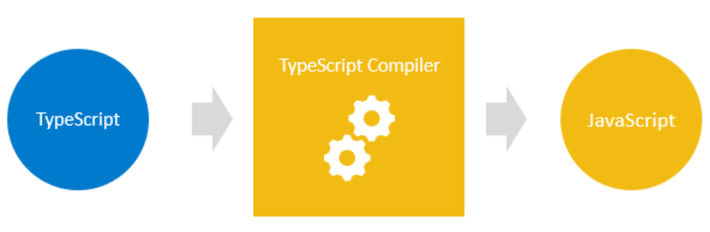

前言 這篇文章主要來紀錄 TypeScript 的學習紀錄
使用的教材有
TypeScript Tutorial 本文
什麼是 TypeScript TypeScript 是 JavaScript 的延伸，也就是說，TypeScript 是建立在 JavaScript 之上的
因此我們可以透過 TypeScript 編譯器 來讓 TypeScript 程式碼轉換為 JavaScript。

那我們也可以將一個沒有語法錯誤的 JS 程式 視為 TS 程式 ，因此在這兩種語言之間進行轉換，所需要的成本是相對比較低的。
透過引進 型別 到 JS，能夠使開發過程更加嚴謹，進一步減少 Bugs。
Basic Type Type Annotation 透過 Type Annotations 的方式來表明變數的型態
1 let <variable>: <type>: <value>
E.g.
如果指定錯誤的值，會發生 compiler error
1 let name: number = 'one' ;
指定一個 sayHello function，並回傳 strin
1 2 3 4 5 6 7 8 9 10 let sayHello: (name: string ) => string;const hello = function (name: string ) return `Hi ${name} ` } const hello = function (name: string ) return `Hi ${name} ` }
Type Inference 與 Type Annotation 相反， Type Inference 是不表明型態 的方式。
E.g.
Type Inference vs. Type Annotation 在大多數的實務上都會使用 Type Inference，會使用 Type Annotation 的時機
先宣告變數而不定義
希望變數的型態不透過 TypeScript 推論
當函式回傳 any
Best common type algorithm 假如今天有一個變數如下，TypeScript 會主動給予該變數一個最適合的變數型態
1 2 3 4 5 let items = [1 , 2 , 3 , null ]; let items = [0 , 1 , null , 'Hi' ] let array = [new Date (), new RegExp ('\d+' )];
Contextual typing Contextual 代表變數會隨著前後文來決定自己的型態
1 2 3 4 5 6 7 8 9 document .addEventListener('click' , function (event ) console .log(event.button); }); document .addEventListener('scroll' , function (event ) console .log(event.button); });
Object Type object 代表的是所有非原型(primitive)型別的值。
TypeScript 的原型型別
number
bigint
string
boolean
null
undefined
sybmol
定義 object 變數
1 2 3 4 5 6 7 8 9 10 11 12 13 14 15 16 17 18 let employee: object;employee = { firstName : 'Percy' , lastName : 'Chen' , age : 22 , jobTitle : 'Web Developer' }; console .log(employee)
Object 與 object 容易搞混的有是 Object，後者所代表的是所有 objects 所能使用的功能，也就是說在 typescript 中幾乎所有的值都有 toString() & valueOf 這些功能可以使用。
empty type {} {} 代表一個沒有任何屬性存在內的 object，如果想要存取 object 的值會發生 compiler error
1 2 let vacant: {};vacant.name = 'Percy' ;
array array 是一個有序的資料，定義的方法如下
1 2 3 4 5 6 7 8 let skills: string[];skills = ['a' , 'b' ] skills.push(123 )
properties & methods array 有許多 屬性 及 方法 可以使用
1 2 3 4 5 6 7 8 9 10 11 12 13 14 15 16 let series = [0 , 1 , 2 , 3 , 4 ]console .log(series.length) series.map(v =>2 ) let sum = 0 ;console .log(series.forEach(function (value )let tmp = series.reduce(function (pre_value, cur_value, )return pre_value+cur_value}, 5 )
mixed type 1 2 3 4 5 6 let scores = ['Programming' , 5 , 'Software Design' , 4 ]; let scores2 : (string | number )[];scores2 = ['a' , 'b' , 1 ]
Tuple 比起 Array，Tuple 多了更多條件
1 2 3 4 5 let skills: [number , string ]skills = ['box' , 5 ] skills = [5 , 'box' ]
Optional tuple elements 從 TypeScript 3.0 開始，便可以透過 ? 來表示一個 tuple 的內容是非必填的。
1 2 3 let bgColor, headerColor : [number , number , number , number ?];bgColor = [0 , 255 , 255 , 0.5 ]; headerColor = [0 , 255 , 255 ];
Enum Enum 是一組常數數值，可以用來定義一連串有關聯性的變數
1 2 3 4 5 6 7 8 9 10 11 12 13 14 15 16 17 18 19 20 21 22 23 24 25 26 27 28 29 30 31 32 33 34 35 36 37 38 39 40 41 42 43 44 45 46 47 48 49 50 51 52 enum Month { Jan, Feb, Mar, Apr, May, Jun, Jul, Aug, Sep, Oct, Nov, Dec }; enum Month { A = 5 , B, C, D, E }
Any type 如果在宣告的時候沒有給予型態，那 typescript 會透過 type inference 的特性給予這些變數any 的型態。
可以透過修改 tsconfig.json 的 noImplictAny 數值來停用自動賦予 any 的這個特性
any vs. object 使用 any 的情境下，在變數沒有該方法可以呼叫時，也不會出現錯誤訊息；相反的，使用 object，可以提早知道錯誤的資訊。
1 2 3 4 5 6 7 8 9 let result: any ;result = 10.123 ; console .log(result.toFixed()); result.willExist(); let result: object ;result = 10.123 ; console .log(result.toFixed()); result.willExist();
Void 與 any 剛好相反， void 表示的是沒有任何型態，通常會用來表示不回傳任何值的狀況
1 2 3 function lo (message: string ): void console .log(message) }
never never 通常被使用來表示回傳的格式中會 觸發錯誤 。
1 2 3 4 5 6 7 8 9 10 11 12 13 14 15 function raiseError (message: string ): never throw new Error (message) } function reject ( return raiseError('Rejected' ) } let loop = () => { while (true ){ console .log("Hello!" ); } }
union union 用來描述一個變數可能會有多種型態的狀況。
Type Alias type alias 賦予現有的型態新的名字
1 2 3 4 5 6 7 8 9 10 11 12 13 type chars = string ;let name: chars; type alphanumeric = number | string ;let value: alphanumeric;value = 'Percy' ; value = 100 ; value = false ;
string literal types 透過 宣告不同的字串 來達成 自定義的型態 。
1 2 3 4 5 6 7 8 9 10 11 12 13 let tax: 'tax' ;tax = 'tax' ; tax = 'tax1' ; let petsound: 'Meow' | 'woof' petsound = 'Meow' ; petsound = 'woof' ; petsound = 'woooof' ; let anotherpetsound: petsound
Control Flow Statements Functions Rest Parameter rest parameter 意味著函式的參數可以接受零到多個參數，此外還有以下規定:
一個函式只能有一個 rest parameter
只能出現在參數的最後一個位子
是一個 array 格式
1 2 3 4 5 6 7 8 9 function fn (...names: string [] ): void names.forEach((name )=> console .log(name)) } fn("Percy" , "Chen" )
Classes 在 ES6 以前，在 JS 中並沒有類別 class 的概念，在 ES6 之後變具備了建立 class 的語法糖
1 2 3 4 5 6 7 8 9 10 11 12 13 14 15 16 17 18 19 class Person firstName : string ; lastName: string ; age: number ; constructor (firstName: string , lastName: string , age: number ) this .firstName = firstName; this .lastName = lastName; this .age = age; } getHelloMessage ( return `Welcome ${this .lastName} ${this .firstName} !` } } let person = new Person('Percy' , 'Chen' , 27 );console .log(person.getHelloMessage());
Access Modifiers 存取修飾符 Access Modifiers 是用來修改類別的 屬性 & 方法 的能見度 ，在 TypeScript 中提供了三種
private
protected
public(預設)
private private 將能見度限制在類別內，意味著類別以外的人是不能夠存取的。
1 2 3 4 5 6 7 8 9 10 11 12 13 14 15 16 17 18 19 class Person firstName : string ; lastName: string ; age: number ; constructor (firstName: string , lastName: string , age: number ) this .firstName = firstName; this .lastName = lastName; this .age = age; } getHelloMessage ( return `Welcome ${this .lastName} ${this .firstName} !` } } let person = new Person('Percy' , 'Chen' , 27 );console .log(person.fiirstname);
public public 的屬性可以在任何地方被存取，在沒有使用修飾符的狀況下，預設都是使用 public。
1 2 3 4 5 6 7 8 9 10 11 12 13 14 15 16 17 18 19 class Person (public ) firstName: string ; (public ) lastName: string ; (public ) age: number ; constructor (firstName: string , lastName: string , age: number ) this .firstName = firstName; this .lastName = lastName; this .age = age; } getHelloMessage ( return `Welcome ${this .lastName} ${this .firstName} !` } } let person = new Person('Percy' , 'Chen' , 27 );console .log(person.getHelloMessage());
protected protected 是允許 自己類別 以及 子類別存取 的屬性。
1 2 3 4 5 6 7 8 9 10 11 12 13 14 15 16 17 18 19 class Person { (procted) firstName: string; (public) lastName: string; (public) age: number; constructor(firstName: string, lastName: string, age: number) { this.firstName = firstName; this.lastName = lastName; this.age = age; } getHelloMessage() { return `Welcome ${this.lastName} ${this.firstName}!` } } let person = new Person('Percy', 'Chen', 27); console.log(person.getHelloMessage());
readonly 透過 readonly 讓類別屬性不可變(immutable)，與 const 的差異在於，前者用在類別屬性，後者用在一般變數。
1 2 3 4 5 6 7 8 9 10 11 12 13 14 15 16 17 18 19 class Person2 readonly birthDate: Date ; constructor (birthDate: Date ) this .birthDate = birthDate; } } let person2 = new Person2(new Date (2010 , 10 , 25 ));person2.birthDate = new Date (2002 , 1 , 2 );
Static properties static 在整個類別及其實例中共用。
1 2 3 4 5 6 7 8 9 10 11 12 13 14 15 16 17 18 19 20 21 class StaticBox static initCount: number = 0 constructor ( private length: number , private width: number , private color: string , ) StaticBox.initCount+=1 } public static getCounter(): number { return StaticBox.initCount; } } let box1: StaticBox = new StaticBox(3 , 4 , 'Blue' )console .log(StaticBox.getCounter())let box2: StaticBox = new StaticBox(1 , 2 , 'Red' )console .log(StaticBox.getCounter())
Interface 將不同的變數透過 interface 的方式包裝
1 2 3 4 5 6 7 8 9 10 11 12 13 14 function getFullName (person: { firstName: string ; lastName: string ; } ) return `${person.firstName} ${person.lastName} ` } let person4 = { firstName : 'John' , lastName : 'Doe' }; console .log(getFullName(person4));
1 2 3 4 5 6 7 8 9 10 11 12 13 14 15 interface Person3 { firstName : string ; lastName: string ; } function getFullName2 (person: Person3 ) return `${person.firstName} ${person.lastName} ` ; } let me = { firstName : 'Percy' , lastName : 'Chen' } console .log(getFullName2(me))
function types 1 2 3 4 5 6 7 8 9 10 11 12 13 14 15 16 interface IsTeeanger { (age: number ): string } let checkIsTeen: IsTeeanger;checkIsTeen = function (age: number ) return age < 18 ? "YES" : "NO" } checkIsTeen = function (anotherage: number ) return anotherage < 18 ? "YES" : "NO" } console .log(checkIsTeen(45 ))
class types 1 2 3 4 5 6 7 8 9 10 11 12 13 14 interface Json { toVolume(): number } class Box implements Json constructor (private length: number , private width: number toVolume(): number { return this .length * this .width } } let box = new Box(5 , 12 );console .log(box.toVolume());
Advanced Types Intersection Type intersection type 代表的是透過多個型態組合成一個新型態。
1 2 type typeAB = typeA & typeB;
1 2 3 4 5 6 7 8 9 10 11 12 13 14 15 16 17 18 19 20 21 22 23 24 25 26 27 28 interface Person { name : string ; sex: string ; } interface Info { address : string ; identity: string ; } type resident1 = Person & Infotype resident2 = Person | Info let man: resident1 = { name : "Percy" , sex : "Man" , address : "Taipei" , identity : "haha" } let man2: resident2 = { name : "Percy" , address : "Taipei" , identity : "haha" }
型態的順序不影響 type intersection
Modules 透過模組化 modules，可以將 A 檔案的內容傳遞給 B 檔案做使用。
1 2 3 4 5 6 7 8 9 10 11 12 13 14 15 16 function foo (number : number boolean if (number % 2 == 0 ){ return true } else { return false } } export {foo}import * as mod from "./my_module" ; console .log(mod.foo(5 ))